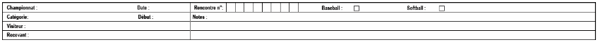

| Championnat | Ecrire le nom de la compétition (Jeux olympiques, Coupe du monde, Coupe internationale, etc.). |
| Date | Jour, mois et année du match. |
| Catégorie | Catégorie des équipes (9U, 12U, 15U, 18U, sénior). |
| Début | Heure du début de match. |
| Visiteur | Nom de l’équipe visiteur. |
| Recevant | Nom de l’équipe qui reçoit. |
| Rencontre N° | Numéro de la rencontre. |
| Baseball/Softball | Cocher la case correspondante au type de match. |
| Notes: | Noter ici tous ce qui peut aider à clarifier des actions dans le match, à l’exception des mesures disciplinaires ou non relevant. Décrire toutes les notations qui ne sont pas logiques. Par exemple, FF8 n’est pas habituelle, mais cela peut se produire et doit être décrit dans la note. Les interruptions du match doivent aussi être notée avec leur justification. S’il n’y a pas assez de place pour tous noter, on peut ajouter une feuille supplémentaire aux feuilles de scorage (papier libre par exemple). |
Après ces entêtes, nous allons voir maintenant la partie principale qui est identiques pour les deux feuilles.